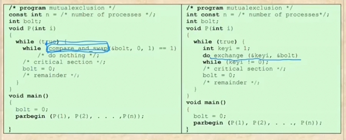

충남대학교 컴퓨터공학과 류재철 교수님의 "운영체제 및 실습" 강의를 필기한 내용입니다.
다소 잘못된 내용과 구어적 표현 이 포함되어 있을 수 있습니다.
Synchronize 문제의 발생
- 프로세스가 concurrence하게 실행될 경우 발생하게 되는 문제이다 - concurrency 문제라고도 부른다
- 프로세스 여러개가 공유하는 변수의 경우 이 프로세스들의 실행 순서에 따라 결과가 다르게 나올 수 있는 것을 의미한다
- 이러한 문제의 경우 os딴에서는 절대 이 문제를 캐치해 낼 수 없다 → 프로그래머는 이러한 문제가 생길 수 있다는 것을 반드시 고려하고 대처할 수 있어야 한다
- multi-thread로 프로그래밍을 하는 경우
- multiprogramming, multiprocessing도중 공유변수를 사용하는 경우
- OS자체도 공유변수를 많이 사용하기 때문에 OS를 개발하는 경우
- 이 경우에 프로세스들 간에 동기화가 되어 있지 않으면 문제가 생길 수 있다
동기화 문제를 해결하기 위해서
- 이것을 해결해주는 system call 이 존재한다
- 이렇게 공유공간 존재하는 경우를 이 공간를 특별히 관리해야된다는 의미에서 critical section이라고 한다
- 이때 mutual exclusion - 상호배제이 중요하다 - 누군가 이 변수를 사용하고 있으면 사용하면 안되고 사용하는 프로세스가 없어야 사용 가능한 것
- 어떤 프로세스가 사용하고 있다는 것은 entry code와 exit code 를 통해 알아냄 - mutex나 semaphore등이 여기에 해당한다고 볼 수 있다
- 변수가 사용중이면 entry code를 통해 이미 사용중이라는 것이라는 것을 알 수 있고 그럼 이 변수를 사용하는 다른 프로세스는 이 변수를 사용하지 못하고 wait상태에 들어가게 된다 - 이러한 과정을 synchronize한다고 한다
- 그리고 기존에 이 변수를 사용하던 프로세스가 변수 사용을 끝내면 exit code가 실행되고 그럼 이 변수는 critical section을 빠져 나오게 된다 → 그러면 다른 프로세스가 접근해서 entry code를 확인했을 때 이 변수는 critical section에 들어있지 않다는 것을 알 수 있고 그럼 다른 프로세스에서 이 변수를 사용할 수 있게 된다
- 또한 progress라는 것도 만족해야 한다 → entry / exit code를 잘못 짜면 critical section에 아무도 없는데 있는것으로 착각하고 waiting상태로 들어갈 수도 있다는 것
- 이 progress에는 deadlock라는 케이스가 있다
- Bounded waiting이라는 것도 만족해야 한다 → 변수가 critical section에 빠져서 다른 프로세스가 waiting에 들어가면 이 기다리는 시간은 무기한 기다림이 아니라 정해진 시간동안만 기다리게 된다는 것
- 만약에 이런 bounded waiting 이라는게 없으면 starvation - 기아상태상태에 빠질 수도 있다 → 프로세스가 cpu할당을 오랫동안 받지 못하는것을 굶주리는 데에 비유한 것
- 이렇게 mutual exclusion, progress, bounded waiting을 만족시킬 수 있는 entry code와 exit code를 짜야 concurrency의 문제가 발생하지 않는다
Race Condition
- 여러개의 프로세스가 공유변수에 접근하고
- 이 프로세스 들 간의 순서에 따라 결과가 달라진다면
- 이때 프로세스들이 공규공간을 경쟁적으로 사용하려고 한다는 의미에서 Race Condition이라고 한다
- 이렇게 race condition이 일어나는 구간을 critical section이라고 하는거고 변수가 이 구간에 포함되게 되면 뭐 mutual exclusion에 의해서 다른 프로세스가 기다리게 되고 뭐 이런거다
OS가 해야 되는 것
- 여러개의 프로세스들을 추적하고 있어야 한다 - 이놈이 critical section에 들어갔는지, 아니면 빠져나왔는지, 그리고 또 누가 critical section에 들어갈 수 있는지를 파악하고 있어야 한다
- 프로세스들한테 자원을 할당하고 해제해야함
- 공유변수 이외의 것은 다른 프로세스가 침범하지 못하게 보호해야 함
- 프로세서의 속도에 따라서도 동기화 문제가 발생할 수도 있고 아닐 수도 있는데 프로세서의 속도(CPU의 처리속도)와 무관하게 동기화 문제가 발생하지 않도록해야 함
Mutual Exclusion 의 원칙
- 모든 프로세스가 따라야 한다
- 프로세스들간의 순서를 지정해 주는 거지 프로세스들 간에 간섭이 일어나게 해서는 안된다
- deadlock이나 starvation이 일어나게 해서는 안된다 - progress, bounded waiting하게 실행되어야 한다
- 프로세서의 속도나 실행되는 프로세스의 숫자와 무관해야 한다
하드웨어적으로 해결법
Interrupt disabling
- 인터럽트가 없다면 실행되는 중간에 다른 프로세스가 끼어드는 일이 없기 때문에 상호배제가 가능하다
- 하지만 이렇게 되면 multiprogram이 아닌 uniprogram이 되어서 context change에 대한 이점을 얻지 못하게 된다
Atomic operation
- 동기화의 문제가 발생할 수 있는 부분을 atomic operation으로 만들어보자는 것
- atomic operation이라는 것은 해당 부분을 하드웨어적으로 구현해놓아 이 함수를 하나의 instruction으로 만들겠다는 것
- 당연히 하나의 instruction을 실행할 때는 inturrupt가 걸리지 않으므로 동기화의 문제도 발생하지 않는다
- 이렇게 atomic opration을 적극 활용하면 동기화의 문제를 막을 수 있다
- 이놈을 잘 살펴볼 것 - compare_and_swap과 exchange라는 atomic operation을 이용해 mutual exclusion하게 코드를 짠 예시이다

하지만 위의 코드는 문제가 있다
- 다른 프로세스가 기다리는 동안 while(keyi != 0)이라는 조건을 계속 체크해야 되므로 기다리는 와중에도 cpu를 차지하게 된다 → busy waiting이라고 한다
- 그리고 다음 실행 순서가 랜덤이다 → 이렇게 되면 운없는 어떤 프로세스는 starvation에 빠질 수도 있게 된다
- 그리고 deadlock도 막지 못한댄다
Semaphore
- 동기화의 문제점을 해결하기 위한 하나의 방법 - 제일 널리 사용된단다
- 위의 코드와는 다르게 기다리는 중에는 cpu를 먹지 않아 busy waiting하지 않는다
- 그리고 다음 실행 순서가 랜덤하지 않고 대기 큐에 들어가 FIFO하게 빠져나온다 - 그래서 starvation의 문제를 막을 수 있음
Monitor
- 동기화의 문제를 해결하기 위해 프로그래밍 언어 차원에서 자동으로 해주는 것들도 있는데 얘네들을 monitor라고 한다